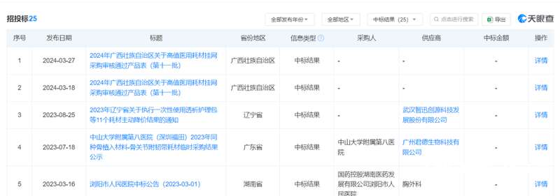
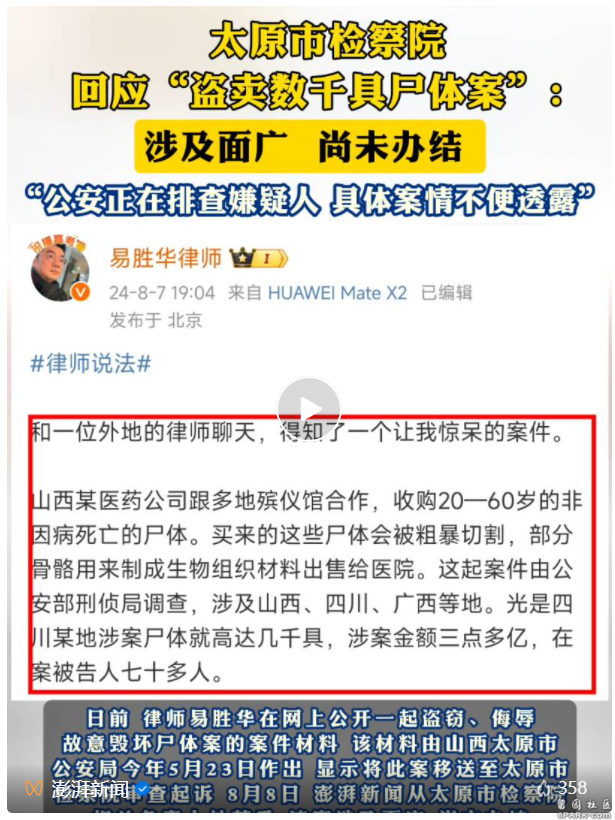

日前，一则关于山西奥瑞生物材料有限公司（以下简称“奥瑞生物”）非法购买遗体的起诉意见书在网络传播。
据上述起诉意见书显示，2015年1月到2023年7月，奥瑞生物通过从四川、广西、山东等地非法购买遗体、残肢作为原材料，并在购买和生产过程中对非法获取的遗体、骨骼进行粗暴肢解、剔除皮肉、清洗、辐照等，用于生产“同种异体骨植入性材料”产品，销往各地医院，非法获利。
经国家审计署太原特派办审计，奥瑞生物于2015年-2023年期间的营业收入合计达到3.8亿元。警方在侦办该案中，查封涉案公司人体骨骼原材料、半成品18余吨，成品34077个。
为掩盖奥瑞生物用于生产加工“同种异体骨”的遗体原材料来源非法，奥瑞生物相关高管人伪造遗体志愿捐献登记表、检验报告等材料证明其遗体来源合法性和安全性，并组织公司大部分员工在遗体捐献登记表上假冒家属签字。
南都·湾财社致电联系撰写起诉书的山西省太原市人民检察院，对方表示，为值班人员，对于具体情况并不了解。按照起诉流程，湾财社进一步致电太原市中级人民法院，对方表示，需要进一步核实。就此事，南都湾财社记者曾多次联系山西奥瑞生物，截至发稿，并未获得回应。
南都·湾财社梳理发现，奥瑞生物是同种组织修复材料器械行业的技术先行者，是山西省医用组织库，是国家高新技术企业，也是专精特新企业。那么在多重身份的背后，奥瑞生物到底是一家怎样的企业？
系山西省医用组织库，参与起草多项行业标准
奥瑞生物的最早历史要追溯到1999年。
起诉意见书显示，1999年，中国辐射防护研究院（以下简称“中辐院”）成立山西奥瑞生物材料有限公司（以下简称山西奥瑞公司），经营范围是“同种异体骨植入性材料”的研发、生产、销售，李宝兴任总经理。
2007年开始，奥瑞生物逐步引进丛茂义、苏成忠收购中辐院及员工的股份。2012年奥瑞生物股份制改革完成。天眼查显示，丛茂义占股54.08%，是奥瑞生物最大股东、法人代表，并担任董事长；苏成忠占股45.92%，担任总经理。
原奥瑞生物总经理李宝兴负责日常管理公司。李宝兴利用其原中辐院第八研究所所长的身份和影响力，聘用中辐院职工到该公司担任副总和各部部长，通过掌握“同种异体骨植入性材料”生产技术主导奥瑞生物生产经营。
南都·湾财社梳理发现，奥瑞生物是同种组织修复材料器械行业的技术先行者。起草了2项行业标准，参与了《同种异体植入性医疗器械病毒灭活工艺验证技术审查指导原则》的起草与修订；参与了国际上本领域2本专著的编写。
中国医疗器械行业协会相关公众号发文显示，奥瑞生物又名“山西省医用组织库”，目前主要从事同种组织（骨）植入材料的开发研究、生产制备与分发供应，是具有独立法人资格的有限责任公司。
公开资料显示，组织库是以医学研究、教学和同种异体组织移植等为目的，接收捐献的人类遗体或组织并进行相应的加工处理、储存与运输，以供临床应用的机构。战争、自然灾害等原因造成的组织缺失或损伤是组织库在全球许多地方建立的主要原因。
就中国医用组织库的发展历史来看，国内医用组织库起步于20世纪50年代，期间历经了小规模医院内组织库、民办非营利专业组织库、规模化企业组织库等发展阶段。到了20世纪90年代，企业性质组织库纷纷成立，同种异体组织修复材料的研发及应用也逐步完善，包括同种异体骨、皮肤、肌腱、神经等多种材料分别获得第三类医疗器械注册证。进入21世纪后，民办非企业性质组织库兴起，这时中国医用组织库主要由院内组织库、企业组织库和民办非企业性质组织库为主的3大类型组成。
奥瑞生物的日常管理人李宝兴曾于2009年5月在《中国修复重建外科杂志》发表《山西省医用组织库20年》，介绍了山西省医用组织库和奥瑞生物的创立发展过程。
据悉，1994年，山西省卫生厅批准成立山西省医用组织库，纳入山西省卫生系统，确定工作范围为“从事人体组织移植材料的开发研究、生产制备、质量管理和分发供应”。
1999年，国务院令(第276号)《医疗器械监督管理条例》发布，医疗器械实行注册制度，三类植入性医疗器械由国家药监局统一管理注册。山西组织库要为临床提供产品，就必须以实体的形式取得生产许可证及法人资格。
李宝兴当时任西组织库主任一职，他敏锐观察到机会，并多方协调，最终成功创办了奥瑞生物。
中标多省公立医院采购项目，曾被列入“四级监管”
奥瑞生物主要从事研制生产深低温冻干辐照同种异体骨。
业内人士告诉湾财社，同种异体骨就是别人身上的骨头。同种异体骨目前在医学上应用比较广泛，折粉碎明显造成骨缺损骨不连的患者、自身取骨有禁忌症的患者，都会用到同种异体骨。同种异体骨一般是经过特殊的灭菌处理。在临床中，经过很多年的研究，与自身骨骼的愈合也不会有太大的问题。
据天眼查显示，奥瑞生物是高新技术企业，同时也是专精特新企业。
奥瑞生物于2021年12月获得高新技术企业证书，有效期限至2024年12月。除此之外，奥瑞生物还于2021年3月获得质量管理体系认证（ISO9001）以及医疗器械质量管理体系认证。
当前，奥瑞生物具有13项有效的专利，其中11项为实用新型，2项为发明专利。值得注意的是，其中 6项专利处于“授权”状态，7项专利处于“专利权的转移”状态。
湾财社梳理发现，奥瑞生物涉及25条中标结果信息，曾先后与四川省、广东省、福建省、广东省等多个省份辖内的多家公立医院达成合作，涉及中山大学附属第八医院、四川省骨科医院、南方医科大学中西医结合医院、武汉市第四医院、福建医科大学附属第二医院、国药控股泉州有限公司等。

具体来看，2018年10月，奥瑞生物同种异体骨产品中标湖北省武汉市第四医院骨科耗材带量采购；2020年6月，作为异体肌腱/同种骨植入材料的中标品牌入选广东省南方医科大学中西医结合医院骨科耗材名单；2020年9月，其松质骨产品通过成都市国杏医药有限公司中标乐山市人民医院同种骨植入材料耗材采购项目；2022年8月,中标福建医科大学附属第二医院同种骨植入材料；2023年2月，入选四川省骨科医院医用耗材同种异体骨遴选评议结果名单；2023年7月中标中山大学附属第八医院（深圳福田）2023年同种骨植入材料-骨关节附韧带耗材临时采购项目。
湾财社还发现，在2023年山西省药品监督管理局发布的一份医疗器械生产企业监管名单中，奥瑞生物位于“四级监管生产企业名单”，是重点检查的企业。
据悉，四级监管清单包括《国家重点监管医疗器械目录》涉及的生产企业和质量管理体系运行状况差、存在较大产品质量安全隐患的生产企业。
需要注意的是，在2024年7月5日，奥瑞生物因未依照《企业信息公示暂行条例》第八条规定的期限公示年度报告，被山西省市场监督管理局列入“经营异常”状态。
“数千具尸体被盗卖”，最新情况
山西一家公司涉嫌盗卖数千具尸体引发外界广泛关注。
因视频号作者隐私设置暂无法查看
澎湃新闻
日前，律师易胜华在网上公开一起盗窃、侮辱、故意毁坏尸体案的案件材料，该材料由山西太原市公安局今年5月23日作出，显示将此案移送至太原市检察院审查起诉。
据澎湃新闻此前报道，2015年1月到2023年7月，山西奥瑞生物材料有限公司（下称山西奥瑞公司）涉嫌通过从四川、广西、山东等地非法购买遗体、残肢作为原材料，并在购买和生产过程中对非法获取的尸体、尸骨进行处理后，用于生产“同种异体骨植入性材料”产品。经审计，2015年-2023年的营业收入合计达到3.8亿元。警方在侦办该案中，查封涉案公司人体骨骼原材料、半成品18余吨，成品34077个。
根据材料，该案涉及非法盗窃、倒卖尸体数千具。
案件材料称，2017年至2019年期间，嫌疑人苏某某先后以承包、入股、派人入驻等方式，控制四家殡仪馆的火化场。随后指使其安排在火化场的人员盗窃尸体，并在火化车间内对尸体粗暴肢解后，运回其公司，部分尸体在其公司内肢解，苏某某供述上述四家火化场共向其公司提供4000余具人体骨骼。
材料称，该案共有75名犯罪嫌疑人，均对犯罪事实供认不讳，认罪认罚，涉及的单位包括山西奥瑞公司、四川恒普科技有限公司（下称四川恒普公司）、山东青岛大学附属医院肝脏病中心、桂林医学院、桂林市殡仪馆、平乐县殡仪馆、永福县殡仪馆等单位。此外，还涉及犯罪嫌疑人苏某某所控制的云南水富市火化场、重庆巴南区火化场、贵州石阡县火化场、四川大英县火化场。
8月8日中午，易胜华律师向澎湃新闻表示，他从知情人处获得前述案件材料，材料是真实的。他曾在微博中表示，他不是这个案子的辩护律师。
涉嫌盗卖尸体的山西奥瑞公司，
此前已被公安查封
澎湃新闻注意到，涉事公司名为山西奥瑞生物材料有限公司（下称山西奥瑞公司），由中国辐射防护研究院于1999年成立，2012年完成股份制改革，位于山西太原市小店区学府街。8月8日，在中国辐射防护研究院门口，研究院一所一位工作人员称，山西奥瑞公司属于中国辐射防护研究院的下属单位，半年多前被当地警方查封，人被抓了。警方查封当天，里面的人不让出，外面的人也不让进。
中国辐射防护研究院的人士说，目前，山西奥瑞公司的办公区域都已被警方用围挡封闭。中国辐射防护研究院的门卫表示，山西奥瑞公司出了问题，想进入山西奥瑞公司，需内部有人打电话或出来接才能进入。
据澎湃新闻此前报道，山西太原市公安局今年5月作出的一份案件材料显示，山西奥瑞公司为中国辐射防护研究院于1999年成立的子公司，经营范围是“同种异体骨植入性材料”的研发、生产、销售，由李某兴任总经理。2007年开始，山西奥瑞公司逐步引进丛某某（已刑拘上网追逃）、苏某某收购中辐院及员工的股份。至2012年，丛某某占股54.08%，是最大股东、法人代表，担任董事长，苏某某占股45.92%，担任总经理，李某兴实际负责公司运营。
据中国医疗器械行业协会2021年提供的资料，山西奥瑞生物材料有限公司又名“山西省医用组织库”，目前主要从事同种组织（骨）植入材料的开发研究、生产制备与分发供应，是具有独立法人资格的有限责任公司。公司注册资金1200万元，固定资产720余万元。公司拥有研究生导师等一批医学生物高素质人才。有职工36人，其中高级职称8人，中级职称1人，医学博士1名，硕士4人；专职检验人员5名；医疗器械内审员7人。该公司于1999年11月4日成立。2001年同种骨植入材料获得国家药品监督管理局准产注册，于2005年、2009年、2012年、2016年、2020年五次重新/延续注册，多次通过国家局认证和飞行检查。
澎湃新闻注意到，山西奥瑞公司的经营范围是“同种异体骨植入性材料”的研发、生产、销售。一位骨科医生向澎湃新闻介绍，同种异体骨材料工作中确实会用到，一般是由医院药械部门采购，作为医生，很少关注原料的来源。其介绍，同种异体骨材料较少产生排异，目前没有特别好的可替代品。
一位从事器官捐赠的业内人士表示，目前，人体组织的使用问题，没有明确的法律法规规定，但遗体如何处置，殡仪馆有自己的管理规定；若是器官捐赠，则需要本人、亲属等签署文件，总的原则是要尊重当事人及亲属的意愿。
太原市检察院回应：
涉及面广，尚未办结
8月8日，澎湃新闻从太原市检察院相关负责人处获悉，该案涉及面广，尚未办结。
太原市检察院相关负责人告诉澎湃新闻，案件尚未办结，“公安正在排查嫌疑人，具体案情不便透露。”

针对该案，澎湃新闻采访了多个有关部门。桂林市民政局办公室工作人员表示，此前已介入调查处理，具体由相关业务科室负责跟进。
案件材料称，2017年3月，该案嫌疑人张某某到四川大英县火化场任经理一职，负责从殡仪馆挑选、盗窃、偷运尸体，向四川恒普公司提供人体骨骼原料。
8月8日，大英县民政局工作人员向澎湃新闻证实，大英县火化场经理的确是张某某，但是他是被企业安排到这里担任经理，不属于民政局工作人员。而该火化场是大英县民政部门和企业联营的，至于这家企业是不是四川恒普科技有限公司，这位工作人员表示不知情，也不知道张某某涉案或被抓的情况。
青大附院有医生卷入，
简历紧急撤下
8月8日16时许，澎湃新闻注意到，青岛大学附属医院器官移植中心网站已将该中心副主任、主任医师李某强的信息紧急撤下。
材料中提及，2015年至2021年期间，山东青岛大学附属医院肝脏病中心副主任医师李某强事先将遗体肢解后，放入冷柜保存，电话联系山西奥瑞公司的李某源，由李某源等人将肢解后的尸体运回山西奥瑞公司，共5次。李某强共出售10余具人体骨骼原料，每具价格1万-2.2万元不等。李某源等人对李某强进行辨认，确认去过青岛大学附属医院与李某强对接购买人体骨骼原料。
8月8日14时许，青岛大学附属医院一名工作人员向澎湃新闻介绍，器官移植中心搜不到李某强这个医生，也查不到他具体的出诊信息。
公开资料显示，李某强曾任青岛大学附属医院肝脏病中心副主任，现为青岛大学附属医院器官移植中心副主任、器官移植中心重症监护室主任、器官捐献与移植管理办公室副主任。官网资料介绍，他长期从事危重病人监护及治疗，熟练掌握危重病人抢救治疗的各项技术，对肝移植病人的术前管理及术后监护治疗有丰富的经验。参与承担在研课题5项，其中山东省自然科学基金3项，科技攻关2项，主编专著3部，副主编1部。